HISTORIA
Episodios de El Chapulín Colorado
Temporadas y Periodos
En Los supergenios de la mesa cuadrada (1970-1971)
- El marciano
- Regalo explosivo
- El vampiro
- Asalto a una limosnera
- El rociador invisibilizador
- La vieja mina abandonada
En Chespirito y la mesa cuadrada/Chespirito (1971-1973)
Nota: No se sabe el orden exacto.
- El antiquísimo búho chino fabricado por los japoneses del Pakistán
- Muerte al Chapulín
- El bandido solitario
- El secuestro y el asalto
- El monstruo Panchostein
- Los marcianos microscópicos
- La tribu perdida de los Panzacola
- La Bruja Baratuja
Rejuntes de 1972
- Un bandido apodado el Matafácil
- La frontera
- La casa con fantasmas
- El ladrón de comida
- El conde Terranova
- El vampiro
- Los vagos del barrio
- Los prisioneros de Juana Gallo
- La venganza
- La mordida de la víbora
- La Llorona
Temporada 1 (1973)
- La casa de los fantasmas
- Los duendes
- La tribu perdida
- Matrimonio por conveniencia
- La explosión de gas
- El regalo explosivo - El caso del pastel envenenadizo
- El fantasma del piel roja
- La muerte del Cuajináis
- Los costales caben en todo, sabiéndolos acomodar
- Aventuras en Venus (Perdido solamente en Español)
- El hombre lobo aullaba en español
- Las bromas del tío Ramón (Perdido solamente en Español)
- La isla de los hombres casi solos
- Marcianos desanforizados
- Cómo matar un Chapulín sin mortificar a la Sociedad Protectora de Animales
- Una momia bastante egipcia
- La casa de té de hierbabuena de la luna del 8 de agosto de 1974
- El pistolero veloz
- Hay hoteles tan higiénicos que hasta la cartera te limpian
- El hombre invisible es tan antipático que nadie lo puede ver
- De noche todos los gatos hacen miau
- Cuando los juguetes vuelan
- Un difunto bastante muerto
- Prohibido tirar bombas en horas de oficina
- El lugar donde más se ponen inyecciones se llama hospital
- El bueno, el malo y el Chapulín
- De los metiches líbranos, Señor
- El hombre que costó 6 pesos
- Los micrófonos están en la onda fresa
Temporada 2 (1974)
- No es lo mismo "los platillos voladores" que "los bolillos plateadores"
- El caso de dos hombres que eran tan parecidos que eran idénticos, sobre todo uno de ellos
- La bella durmiente era un señor muy feo 1
- La bella durmiente era un señor muy feo 2
- Los búfalos, los cazadores y otros animales
- Chapulines vemos, cerebros no sabemos
- En estos tiempos todo anda por las nubes, hasta los aviones
- A pistola regalada, no le mires agujero
- Lo malo de los fósiles es que son muy difósiles de encontrar
- En las fotografías tamaño miñón, el Chapulín Colorado sale de cuerpo entero
- Ladrón que roba a ladrón es traidor al sindicato
- Don Chapulín de la Mancha
- En la casa del fantasma hasta los muertos se asustan
- No es lo mismo "chapulines con agua" que "aguas con los chapulines"
- La chicharra paralizadora
- Ratas vemos, intenciones no sabemos
- Conferencia sobre un Chapulín
- Perdón, ¿aquí es donde vive el muerto?
- El regreso de la chicharra paralizadora
- Juan Sebastián Bach hizo muchas fugas, pero no se sabe de qué presidio
- El disfraz, el antifaz y algo más (1ª parte)
- El disfraz, el antifaz y algo más (2ª parte)
- No te arrugues cuero viejo que te quiero pa’ tambor
- La sortija de la bruja
- De Chapulín, poeta y loco todos tenemos un poco
- Los bebés ya no vienen de París, ahora vienen de Júpiter
- No es lo mismo hacerse bolas con la magia que hacerse majes con la bola
- No me molestes, mosquito
- No se vale mano negra
- ¿De casualidad no han visto por aquí al hombre invisible?
- Después de Chapulín ahogado, tapen el pozo
- Al que de plano le tomaron el pelo fue a Sansón
- Aunque la jaula sea de oro, no deja de ser muy molesto eso de estar encerrao
- Algún día los terrícolas llegarán a Marte, o por lo menos a estimarte
- Aunque el Cuajináis se vista de seda, mono se queda
- El anillo perdido (Retransmisión de 1973)
- No es lo mismo "la casa se cae de vieja" que "la vieja se cae de la casa"
Temporada 3 (1975)
- No es lo mismo "las bombas de agua" que ¡aguas con la bomba!
- La mordida de la víbora
- De médico, Chapulín y loco todos tenemos un poco
- Aventuras en un planeta habitado por salvajes, que aunque parezca mentira, no es la Tierra
- La ropa limpia se ensucia en casa
- Dinero llama a dinero. Ah, pero también al ratero
- Un bandido bastante muerto
- Colección de rateros (Retransmisión de 1977)
- La ley del Chipote Chillón
- Los antiguos piratas del Caribe sólo de vez en cuando desviaban a Cuba (1ª parte)
- Los antiguos piratas del Caribe sólo de vez en cuando desviaban a Cuba (2ª parte)
- Los antiguos piratas del Caribe sólo de vez en cuando desviaban a Cuba (3ª parte perdida)
- Cuando los gemelos no son buenos cuates
- Las momias no se venden. ¡Ah, pero cómo se vendan!
- Con la ley del embudo, ni el Chapulín pudo
- Explotar un negocio no significa que hay que ponerle una bomba
- Donde manda Satanás, no gobierna un pobre diablo
- La romántica historia de Juleo y Rumieta (1ª parte)
- La romántica historia de Juleo y Rumieta (2ª parte)
- Más mezcla, maistro
- Jamás volveré a jugar apostando dinero y te apuesto lo que quieras a que cumplo
- La mansión de los duendes
- El regreso de la chicharra paralizadora
- Un juguete llamado Chapulín
- De Chapulín, cazador y loco todos tenemos un poco
- Limosnero y con garrote
- El fantasma del pirata
- La que nace pa’ Cleopatra no pasa de Julio César
- De que dicen a pelear, del cielo te caen las piedras
- Lo chiflado no quita lo cantado
- El extraño y misterioso caso del difunto que se murió
- Marcianos desanforizados
- Historia de un reloj que ni se adelantaba ni se atrasaba, sino todo lo contrario
Temporada 4 (1976)
- En las guerras médicas, la bayoneta se llamaba bisturí
- El misterio del abominable hombre de las nieves
- Los costales caben en todo, sabiéndolos acomodar
- El campeón de karate amaneció de mal karáter
- Cuento de brujas
- El hombre lobo aullaba en español
- Las bombas hacen mucho daño en ayunas
- Si los ventrílocuos hablan con el estómago, qué trompudos son los panzones
- Hay ladrones que de plano hasta cometen falta de honradez
- Las pirámides egipcias son piedra por fuera y momia por dentro
- Se cambian cerebros a domicilio. Aceptamos su cerebro usado como enganche
- No tiene la culpa el indio, sino el que lo hace Fernández
- ¿Quién dijo que Sansón no tenía un pelo de tonto?
- Hay hoteles tan higiénicos que hasta la cartera te limpian
- Cómo aplastar a un Chapulín sin mortificar a la Sociedad Protectora de Animales
- Un barrio tranquilo, tranquilo, tranquilo
- De los delincuentes que se fugan, el más peligroso se llama gas
- Si a ti te gusta el arte, métete al refrigerador
- No se vale mano negra
- Para un chaparro, bajar de la banqueta es caer al vacío
- Historia de una vieja mina abandonada que data del siglo XVII y que está a punto de derrumbarse
- La isla de los hombres casi solos
- Un difunto bastante muerto
- Ponte los audífonos y agarra la onda
- Las caricaturas me hacen llorar
- A Buffalo Bill le decían búfalo porque era bastante animal. Lo del apellido sí es mera coincidencia
- Fotógrafos vemos, mañas no sabemos
- Si los astronautas llegan a Marte, tú debes corresponder con un cariño igual
- La bella durmiente era un señor muy feo (1ª parte)
- La bella durmiente era un señor muy feo (2ª parte)
- La bella durmiente era un señor muy feo (3ª parte)
- Todo queda en familia
- ¿Es aquí donde vive el difunto?
- El Chirrín Chirrión del diablo
- No se dice "estuata", se dice "menumento"
- No es lo mismo "el pelotón de la frontera" que "la pelotera del frontón"
- Los valientes mueren pandeados
- En la casa del fantasma hasta los muertos se asustan
- Más vale una mujer joven, rica y bonita que una vieja, pobre y fea
- El cofre del pirata
Temporada 5 (1977)
- ¿Sabía usted que su vecino podría ser un marciano?
- ¡Pero cómo has crecido, muchacho!
- A pistola regalada, no le mires agujero
- A pistola regalada, no le mires agujero 2
- Las ratas no usan reloj
- No es lo mismo antigüedades que vejestorios
- Más vale ratero en jaula que ciento robando
- Perdón, ¿aquí es donde vive el muerto?
- Los automóviles se afinan en do mayor
- No seas torpe, Chapulín
- Allá en el techo había un chorrito, se hacía grandote, se hacía chiquito
- Más vale silla en la mano que me siento volando
- El misterio del Mandarín Celeste
- Prohibido pisar el piso
- El lugar donde se ponen más inyecciones se llama hospital
- Chipote Chillón calibre 45
- Matrimonio y mortaja, lana sube y lana baja
- El fantasma del piel roja
- Un Chapulín en Acapulco
- Ahora sí te están comiendo el mandado
- El retorno de la chicharra paralizadora
- Sansón se quedó pelón
- A mí, mis timbres
- Yo al hombre invisible no lo puedo ver ni en pintura
- Los animales viajan en platillo volador
- Cachando sin guante
- El cadáver muerto de un difunto que falleció al morir
- Muñecos vemos, rateros no sabemos
- No es lo mismo "las bombas de agua" que ¡aguas con la bomba!
- Por más que pese no pasa del piso del pozo
- Todo sube, hasta los aviones
- Todo sube, hasta los aviones 2
- Bolita, por favor
- Los bebés ya no vienen de París, ahora vienen de Júpiter
- Melodía bastante inmortal
- Y de salud, ¿cómo anda el muerto?
- Los del norte corren mucho y los del sur se quedarán tras, tras, tras, tras
- El niño que mandó sus juguetes a volar (1ª parte)
- El niño que mandó sus juguetes a volar (2ª parte)
- No son todos los que están, ni están todos los que son
- El caso del pastel envenenadizo
- Todos caben en un cuartito, sabiéndolos acomodar
- Lo malo de las fotografías es que salen movidas
Temporada 6 (1978)
- Más vale cien fantasmas volando que uno en la mano
- Casi un velorio
- Se regalan ratones
- Blancanieves y los siete Churi Churín Fun Flais (1ª parte)
- Blancanieves y los siete Churi Churín Fun Flais (2ª parte)
- Blancanieves y los siete Churi Churín Fun Flais (3ª parte)
- Juego de manos es de boxeadores
- En las peluquerías es fácil hallar pelados
- A la víbora, víbora de la mar
- Las estatuas no dicen "chanfle"
- No es lo mismo "la casa se cae de vieja" que "la vieja se cae de la casa"
- Con la ley del embudo, ni el Chapulín pudo
- Las pulgas amaestradas (Perdido solamente en Español)
- La sortija de la bruja
- Aristócratas vemos, rateros no sabemos
- Don Chapulín de la Mancha
- El retorno de Súper Sam
- Al hombre lobo le hacen daño las caperucitas verdes
- Dinero llama a dinero, pero también al ratero
- La mansión de los fantasmas
- La amenaza del mosquito biónico
- La función debe continuar (1ª parte)
- La función debe continuar (2ª parte)
- La función debe continuar (3ª parte)
- La función debe continuar (4ª parte)
- La función debe continuar (5ª parte)
- La función debe continuar (6ª parte)
- Érase un hombre a una nariz pegado
- Los piratas de Pittsburgh, perdón, del Caribe (1ª parte)
- Los piratas de Pittsburgh, perdón, del Caribe (2ª parte)
- My fair lady que en español, quiere decir que a mi dama la fue como en feria
- No es lo mismo "Pancracio se enfermó del colon" que "Colón se enfermó de páncreas"
- Los hombres vampiro no saben hacer otra cosa más que andar chupando sangre
- El Chapulín es buen mozo
- La historia de don Juan Tenorio
- Lo bueno de tomar fotografías es cuando te salen movidas
- El sastrecillo valiente (1ª parte)
- El sastrecillo valiente (2ª parte)
- El sastrecillo valiente (3ª parte)
- El sastrecillo valiente (IV y última parte)
- El rey de los disfraces
Temporada 7 (1979)
- ¿Duende está el dónde? Eh, perdón, ¿dónde está el duende? (Retransmisión de 1977)
- La ociosidad es la madre de un amigo mío
- Tiene manita, no tiene manita, porque la tiene desconchabadita
- El regreso de la chicharra paralizadora
- Jamás volveré a jugar apostando dinero y te apuesto lo que quieras a que cumplo
- La romántica historia de Julio y Rumieta (1ª parte)
- La romántica historia de Julio y Rumieta (2ª parte)
- No te arrugues cuero viejo que te quiero pa’ tambor
- Limosneros vemos, millonarios no sabemos
- El regreso del Rascabuches
- De los delincuentes que se fugan, el más peligroso se llama gas
- El pintor se fue de pinta
- Más mezcla, maistro
- La que nace pa’ Cleopatra no pasa de Julio César
- Se cambian cerebros a domicilio. Aceptamos su cerebro usado como enganche
- Cómo convertirse en héroe en cuatro fáciles lecciones
- El disfraz, el antifaz y algo más (1ª parte)
- El disfraz, el antifaz y algo más (2ª parte)
- El besito de las buenas noches
- Bebé de carne sin hueso
- De torpe, Chapulín y loco todos tenemos un poco
- Al robot se le infectaron los transistores
- Hay que explotar el negocio
- ¿Quién lleva aquí los pantalones?
- La despedida
HISTORIA
Un recorrido por el universo del Chapulín Colorado...
EL INICIO DE UN HÉROE
He seguido al héroe del corazón amarillo por desiertos, naves espaciales y casas embrujadas para traerles esta crónica detallada.
Aquí comienza el desglose capítulo a capítulo de mi investigación con respecto a este misterioso héroe.
EL MARCIANO
Un platillo volador aterriza en un bosque y de él emerge un marciano con facultades asombrosas, como la capacidad de hacerse invisible o desintegrar objetos con su pistola. El Chapulín Colorado es llamado para investigar y, tras varios encuentros aterradores donde el alienígena lo supera tecnológicamente, el héroe intenta comunicarse sin éxito.
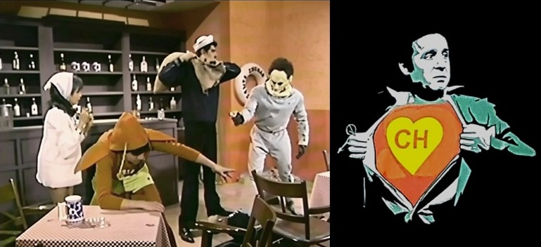
La trama se resuelve cuando el marciano, tras observar el extraño comportamiento del Chapulín, decide que los humanos son seres incomprensibles y opta por abandonar la Tierra en su nave.
hazañas MAS destacadas
EL ROCIADOR INVISIBILIZADOR
Un científico desarrolla un líquido que vuelve invisible cualquier cosa que toque. El conflicto estalla cuando el Chapulín confunde el rociador con un atomizador de perfume y comienza a aplicárselo a sí mismo y a los objetos de la casa, generando un caos visual.
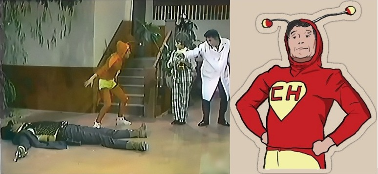
Un delincuente aprovecha la situación para intentar robar la fórmula, pero el Chapulín, a pesar de no ver sus propios movimientos ni los de su enemigo, logra frustrar el robo debido a que el efecto de la invisibilidad desaparece justo en el momento clave.
La casa de los fantasmas
Una familia pide ayuda al Chapulín porque en su nueva mansión ocurren eventos paranormales: los muebles se mueven solos y aparecen figuras espectrales. El héroe recorre la casa lleno de miedo, enfrentando lo que parecen ser fantasmas reales, hasta que sus constantes caídas y tropiezos lo llevan a descubrir cables, proyectores y mecanismos ocultos.
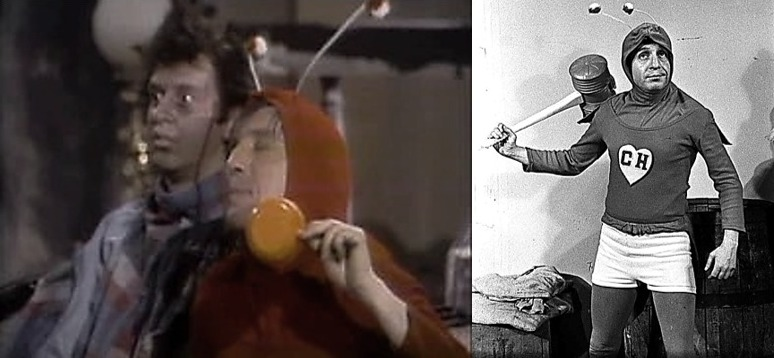
Al final, se revela que todo es un truco de una banda de maleantes que intentaba asustar a los dueños para quedarse con un tesoro escondido en la propiedad.
La muerte del Cuajináis
El Chapulín asiste al velorio del temido criminal "Cuajináis" para certificar que ha muerto, pero sospecha que todo es una farsa para que el delincuente pueda escapar de la justicia. Para comprobarlo, el héroe somete al "cadáver" a una serie de pruebas absurdas y golpes accidentales con su Chipote Chillón.
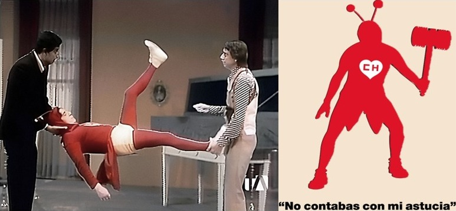
La tensión aumenta hasta que el Cuajináis, incapaz de seguir fingiendo ante el maltrato físico y el estrés de la situación, "resucita" de un salto, siendo capturado inmediatamente por las autoridades.
No es lo mismo "chapulines con agua" que "aguas con los chapulines"
El Chapulín interviene en una violenta disputa doméstica donde un hombre está a punto de agredir a una mujer. En este episodio se introduce la Chicharra Paralizadora, la cual el héroe utiliza para congelar a los agresores en seco.
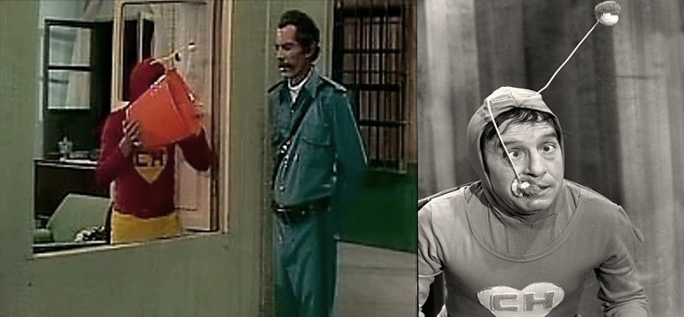
Sin embargo, la trama se complica cuando el Chapulín pierde el control del dispositivo, paralizando a las personas en posiciones incómodas y olvidando quién es el culpable, lo que genera una serie de situaciones cómicas hasta que logra poner orden y desarmar al atacante.
De Chapulín, poeta y loco todos tenemos un poco
El Chapulín Colorado acude a una vivienda para investigar una serie de irregularidades, coincidiendo en el lugar con un detective privado y un mendigo que buscaba caridad. Al principio, la misión parece ser la protección de tres hermanas llamadas Dolores, Angustias y Remedios, quienes aparentan estar aterrorizadas por la presencia de extraños y el misterio que rodea su hogar.
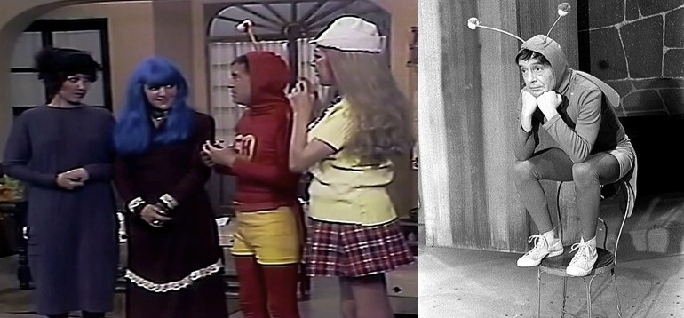
Sin embargo, la realidad es que las tres hermanas son criminales que buscan ocultar sus actividades ilícitas. Aprovechando la nobleza del Chapulín y la distracción de los otros dos hombres, las mujeres logran narcotizarlos a todos, dejándolos profundamente dormidos y fuera de combate. El episodio destaca por la vulnerabilidad de los protagonistas frente al engaño de las hermanas, resolviéndose solo cuando los efectos del somnífero pasan y el Chapulín, entre tropiezos y confusiones tras despertar, logra accidentalmente que las autoridades descubran la verdadera naturaleza de las dueñas de casa.
El disfraz, el antifaz y algo más
En una fiesta de disfraces donde abundan las personas vestidas como el Chapulín Colorado, un contrabandista planea realizar una entrega ilegal. El verdadero Chapulín se infiltra en la reunión, pero sufre de una confusión constante al no saber quiénes son invitados reales y quiénes son los criminales.
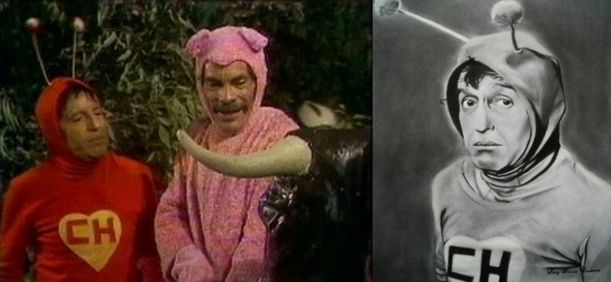
Tras una serie de persecuciones erráticas y equivocaciones con los disfraces de los demás asistentes, el héroe logra identificar al jefe de la banda gracias a una torpeza del villano que lo delata frente a todos.
El anillo perdido
Una mujer entra en pánico tras perder un anillo de compromiso de gran valor en su hogar. El Chapulín decide utilizar las Pastillas de Chiquitolina para reducir su tamaño y poder rastrear la joya en lugares inaccesibles como grietas y bajo los muebles.
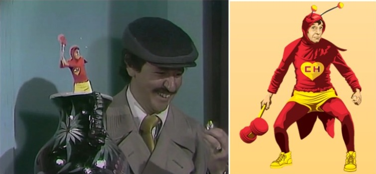
La trama se centra en los peligros que enfrenta el héroe a escala diminuta, incluyendo el encuentro con un ratón que, para su tamaño, representa una bestia feroz, logrando finalmente recuperar el anillo tras una odisea en el "mundo gigante" de la sala.
La Bella Durmiente era un señor muy feo
Basado en una distorsión del cuento clásico, el Chapulín debe investigar por qué una persona de la realeza ha caído en un sueño profundo del que nadie puede despertarlo. Al llegar al castillo, descubre que no se trata de un hechizo mágico, sino de un complot que involucra sustancias somníferas
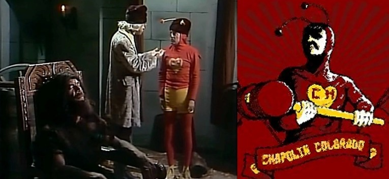
El héroe utiliza métodos muy poco convencionales y ruidosos para intentar despertar a la víctima, logrando finalmente frustrar los planes de quienes querían usurpar el poder mientras el "soñador" dormía.
MENCIONES
Todo queda en familia
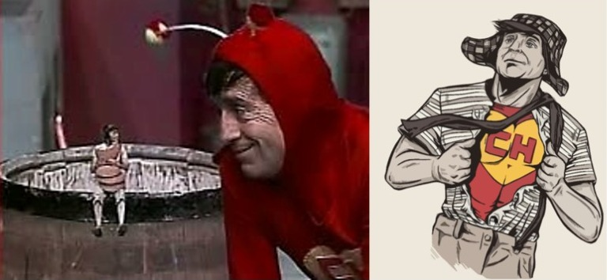
La romántica historia de Juleo y Rumieta
Blancanieves y los siete Churi Churín Fun Flais
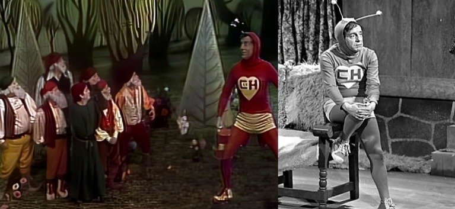
El rey del disfraz
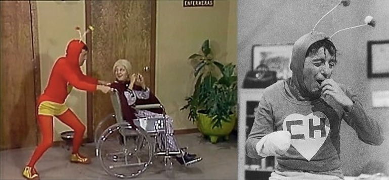
La función debe continuar (El cine)
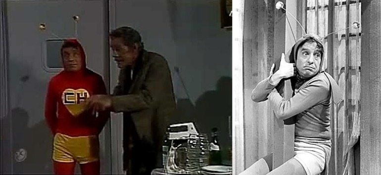
¿ACASO VIAJO EN EL TIEMPO?
La tribu perdida
El Chapulín Colorado es convocado a una expedición en lo profundo de la selva para localizar a un grupo de exploradores que han desaparecido sin dejar rastro. La misión se torna crítica cuando el héroe descubre que han sido capturados por una tribu antigua que nunca ha tenido contacto con la civilización moderna. El conflicto surge cuando la tribu confunde al Chapulín con una deidad o un espíritu debido a su vestimenta roja, lo que lo obliga a mantener la farsa para evitar ser sacrificado junto a los demás prisioneros.
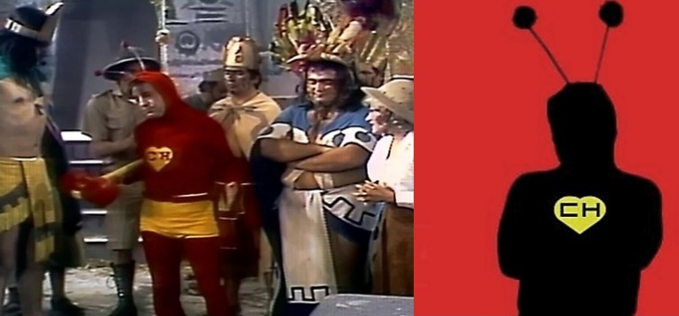
La trama se resuelve mediante una serie de malentendidos culturales donde el Chapulín intenta usar sus armas, como el Chipote Chillón, para demostrar un "poder" que en realidad no tiene. Tras varios momentos de tensión donde su miedo casi lo delata, el héroe logra liberar a los exploradores aprovechando una distracción causada por su propia torpeza. El episodio destaca por el contraste entre la supuesta superioridad del héroe y la astucia natural de los miembros de la tribu, quienes terminan más confundidos que asustados.
El bueno, el malo y el Chapulín
En un desplazamiento temporal hacia el Viejo Oeste, el Chapulín debe pacificar un pueblo aterrorizado por el peligroso bandido "El Rascabuches". El operativo es de alta complejidad, ya que el héroe debe participar en un duelo clásico en la calle principal, enfrentando no solo a los criminales locales sino también a la competencia de Súper Sam, el héroe estadounidense que intenta imponer su propia ley. La tensión entre ambos protectores se vuelve el eje central de la misión, mientras intentan decidir quién tiene el derecho de arrestar a los forajidos.
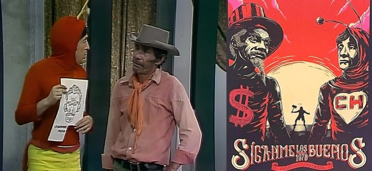
El clímax de la historia muestra al Chapulín utilizando su astucia para sobrevivir a un tiroteo donde las balas son reales, pero su valor es cuestionable. A través de una serie de movimientos erráticos, logra desarmar al villano principal justo antes de que este pueda disparar. La misión concluye con el Rascabuches tras las rejas y un pacto de mutuo respeto (aunque con muchas quejas) entre el Chapulín y Súper Sam, demostrando que la justicia no entiende de fronteras ni de idiomas.
Los piratas del Caribe
El Chapulín viaja al pasado para abordar el barco del temido pirata Alma Negra, quien tiene prisionera a una joven y planea ejecutarla si no revela la ubicación de un tesoro. La misión requiere infiltrarse en una embarcación llena de delincuentes armados con sables y una moral inexistente. El héroe debe usar el sigilo (un área que no domina) para liberar a la cautiva, pero termina siendo descubierto y obligado a pelear en un duelo de esgrima donde su Chipote Chillón se enfrenta a las espadas de acero.
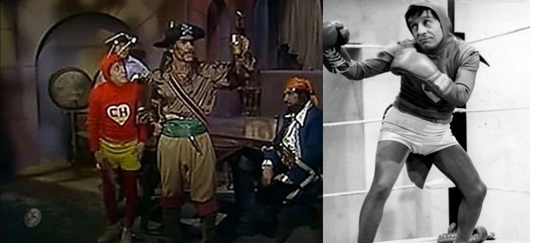
La situación se salva gracias a la capacidad del Chapulín para sembrar el caos entre la tripulación. Al provocar discusiones entre los piratas sobre cómo dividir el botín que aún no tienen, el héroe logra que se peleen entre ellos, facilitando la huida de la prisionera. El episodio es recordado por la atmósfera de aventura clásica y por la interpretación de Alma Negra como un villano cruel que, a pesar de su maldad, no puede competir contra la lógica impredecible del caballero rojo.
En las guerras médicas, la bayoneta se llamaba bisturí
En este operativo situado en un hospital de campaña durante un conflicto bélico, el Chapulín debe proteger a un sargento herido que posee información vital. El peligro no proviene solo del enemigo externo, sino de la confusión interna, ya que el héroe es confundido con un médico especialista y se le exige realizar procedimientos quirúrgicos para los que no tiene formación alguna. El drama se mezcla con la acción mientras el Chapulín intenta ocultar su identidad bajo una bata blanca mientras esquiva los ataques de un espía infiltrado.
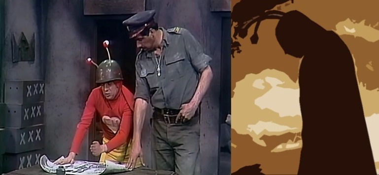
La trama alcanza su punto máximo cuando el espía intenta eliminar al paciente y el Chapulín debe defenderlo utilizando instrumentos médicos como si fueran armas de combate. Entre jeringuillas gigantes y estetoscopios, el héroe logra neutralizar al agresor mediante una serie de accidentes afortunados que lo dejan fuera de combate. La misión termina resaltando la importancia del personal médico en tiempos de guerra, aunque el Chapulín admite que prefiere enfrentarse a diez villanos antes que volver a entrar en un quirófano.
¿EL FINAL...?
La última escena
Este expediente marca el cierre oficial de las transmisiones del programa independiente en 1979. La trama no se centra en una misión de combate tradicional, sino en un acto de reflexión profunda donde el Chapulín Colorado reúne a sus colaboradores habituales para despedirse del público. En un set que evoca nostalgia, el héroe realiza una demostración final de sus herramientas —el Chipote, la Chicharra y las Pastillas—, explicando que cada una fue secundaria frente al verdadero motor de sus hazañas: la voluntad de ayudar a los demás.

El episodio funciona como un metarrelato donde los actores abandonan por un momento sus personajes para agradecer la lealtad de la audiencia durante casi una década de servicio. Se presentan montajes de las misiones más emblemáticas, recordando las caídas, las victorias y los momentos donde la nobleza triunfó sobre el miedo. Es un cierre que humaniza al héroe, mostrando que detrás del traje rojo hay una filosofía de vida basada en que el verdadero valor no consiste en no tener miedo, sino en superarlo.
Finalmente, el Chapulín pronuncia sus últimas palabras oficiales en este formato, sellando el archivo con un mensaje de esperanza.
Con este último reporte, el registro de las temporadas queda completo. Ha sido un honor documentar cada tropiezo, cada "chanfle" y cada victoria de este héroe tan humano. Recuerda que, aunque los episodios terminen, la astucia permanece en quien sabe usarla para el bien. ¡No contaban con mi astucia para terminar este informe